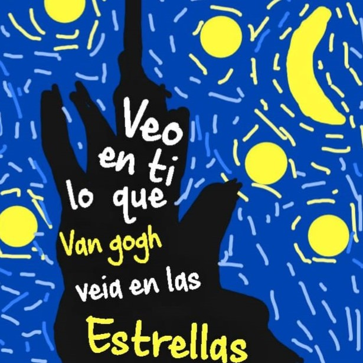

Querida Aphril
No sé cómo expresar lo que siento cuando estoy contigo. Cada momento a tu lado es como estar en un sueño del que nunca quiero despertar. Desde que te conocí, mi vida ha cambiado para mejor, y no puedo imaginarme un futuro sin ti. Me enamoré de tu sonrisa, tu risa contagiosa, tus ojos llenos de vida y la forma en que miras el mundo. Me encanta cómo haces que cada día sea especial, y cómo me haces sentir amado en todo momento. Quiero que sepas que eres la persona más importante en mi vida. Eres mi confidente, mi compañera de aventuras, mi apoyo incondicional y mi mejor amiga. No puedo esperar para compartir el resto de mi vida contigo, y hacer cada día un nuevo capítulo en nuestra historia de amor. Así que aquí estoy, confesando mi amor por ti. Espero que sientas lo mismo por mí, porque no puedo imaginar una vida sin ti a mi lado. Eres el amor de mi vida, y siempre lo serás.
Propuesta
Un día cualquiera te vi
Instantes mas tarde te conocí
Y un par de meses después
De ti me enamore
Desde entonces busco un modo de ganarte
Mi meta principal sera besarte
No soporto las ganas que tengo de buscarte
Pero por ahora me conformo con soñarte
Ya dímelo, que me tienes esclavizado
Cuéntamelo, me quieres a tu lado
O si no me voy, que conmigo estas jugando
Porque loco estoy, por ti
Tengo miedo de lo que vaya a pasar
Si al final se da, pero no vaya a durar
Pero aun así me muero de ganas de intentar
El que no arriesga nunca podrá ganar
Volví a soñar contigo está vez
Nos tomamos de la mano y nos vimos tan bien
Parecía que alcance un estado de lucidez
Pero la alarma me quito este regalo también
Otro 14 de febrero que vuelve a doler
Nada me llena, solo verte sonreír y oler
Tu dulce aroma que me daría la fuerza de resolver
Cualquier problema que tengas, solo abrázame bebe
Ya dímelo, que me tienes esclavizado
Cuéntamelo, me quieres a tu lado
O si no me voy, que conmigo estas jugando
Porque loco estoy, por ti
Pensarte ya pronto un vicio se me hará
Solo nombrarte me hace querer amarte y cantar
La monotonía la alejaste de mi ya
Así que déjame mostrarte de lo que soy capaz
Así que déjame mostrarte de lo que soy capaz por ti